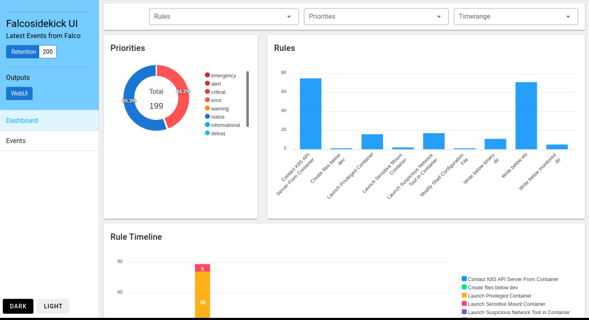

在 OKD4 上部署 Falco 套件
Falco 是一个 CNCF 的安全项目, 可用于 kubernetes 环境下的容器运行时安全监控. Falco 本身的部署，无论是 Linux host 还是 kubernetes 都比较容易. 但是 OKD4 环境的一些特殊性导致 Falco 在其上的部署会出现一系列问题，这里做一个简单的填坑记录.
Falco 在 OKD4 上的部署问题
Falco 监视系统调用的能力来自其 driver 组件 (可以是内核模块或者 eBPF probe). Falco 启动前会检查与当前内核相对应的 driver 是否存在, 如果不存在则先尝试去 https://download.falco.org 下载 prebuilt driver. 如果没有提供 prebuilt driver 则尝试自行编译. 具体逻辑可以查看 /usr/bin/falco-driver-loader 脚本.
自行编译需要 host 上安装了对应内核版本的 kernel-devel 包. 对于普通的 K8S 环境, 这并不是什么问题, 在 host 上用包管理器装上即可. 但是 Openshift4 / OKD4 底层的 RHCOS/FCOS 其受控的不可变性并不允许用户随意安装软件包.
如果是 Openshift4 环境, 你还可以使用自定义 MachineConfig 来添加额外软件包. 具体方法参见 https://github.com/falcosecurity/falco/issues/1505. 但是这个方法对 OKD4 并不适用: FCOS 官方使用的是 fedora yum 源, 而 fedora yum 源并不保存软件包的历史版本, 通过这种方法装上的内核开发包和实际 FCOS 上运行的内核版本并不一致.
当然你可以尝试自己维护一个 yum 源: 从 koji 构建系统中把和 FCOS 内核版本一致的开发包下载下来做成 yum 源, 然后在 MachineConfig 里使用你自己的 yum 源来安装版本一致的 kernel-devel. 为了避免修改 FCOS 导致的集群升级的不确定性, 我并不倾向于在 FCOS 上安装软件包, 因此没有尝试这种方法.
这里采用的方法是在外部构建系统中编译和 FCOS 内核版本一致的 Falco driver, 保存在私有的 driver repo 中, 配置 Falco 使用这个私有的 driver repo.
Falco 在 OKD4 上的部署步骤
这里编译和使用的是 eBPF probe driver, 总体而言还是比较顺利. 整体步骤为
- 搭建一个 Fedora 34 的虚拟机作为构建环境 (使用和 FCOS 对应的 fedora 版本)
- 从 https://kojipkgs.fedoraproject.org 下载内核对应版本的开发包, 并安装到构建环境
- 编译 Falco 的 eBPF probe driver
- 将 eBPF probe driver 上传到一个 s3 bucket 供外部下载
- 编写清单文件
- 部署到 OKD4
编译 eBPF probe
OKD 4.8.0-0.okd-2021-11-14-052418 对应的内核版本是 5.14.14-200. 因此从 koji 下载下面的软件包并安装到构建环境
1 | kernel-core-5.14.14-200.fc34.x86_64 |
在构建环境编译 Falco eBPF probe driver:
1 | yum -y install gcc gcc-c++ git make cmake autoconf automake pkg-config patch ncurses-devel libtool elfutils-libelf-devel diffutils which jq-devel clang llvm c-ares-devel gprbuild grpc-devel grpc-plugins grpc-cpp grpc-devel yaml-cpp-devel |
最终产生的二进制文件为 driver/bpf/probe.o. 将其重命名为 falco_fedora_5.14.14-200.fc34.x86_64_1.o
按照指定的路径格式将编译得到的 driver 文件上传到文件服务器或者 s3 bucket 中, 例如 https://static.example.com/driver/3aa7a83bf7b9e6229a3824e3fd1f4452d1e95cb4/falco_fedora_5.14.14-200.fc34.x86_64_1.o. 注意这里 3aa7a83bf7b9e6229a3824e3fd1f4452d1e95cb4 是 Faclo 0.30.0 的 driver version, 你可以从 release notes 中找到. Falco 下载 prebuilt driver 时会去对应的 driver version 路径下按照预定义的文件名下载.
部署 Falco 套件 - falco + falcosidekick + falcosidekick-ui
你可以使用社区提供的 helm chart 或者自行编写清单文件来部署套件到 OKD4. 只需要注意下面几个地方
- 社区 helm chart 默认只支持 containerd 和 docker 运行时, 而 OKD4 使用的是 cri-o. 为此你需要将
/var/run/crio/crio.sock挂载进来, 否则有些信息无法解析 - 为 falco daemonset 添加环境变量
- FALCO_BPF_PROBE: 取值为空. 表示使用 eBPF probe 而不是 kernel module
- DRIVERS_REPO: 取值为你的私有 driver repo 地址, driver version 之前的那段, 例如
https://static.example.com/driver
这里编写 openshift template 来部署
1 | oc new-project falco |
过一段时间后所有 pod 都正常运行了
1 | oc get pod |
可以正常访问 web ui

升级的考量
Falco driver, 无论是 kernel module 还是 eBPF probe 都和特定内核版本对应. 因此当你升级 falco 或者 OKD4 时需要注意
Falco 本身的升级
Falco 版本升级后会有新的 driver version. 此时你需要将新编译 driver 放到新的 driver verson 路径下. 这样你更新 falco daemonset 时, falco pod 会去新的 driver version 路径下下载.
OKD4 集群的升级
OKD4 集群的升级伴随着内核版本的更新, 此时你需要根据新的内核版本重新编译 falco driver, 上传到你的 driver repo 中. 这样 falco pod 被调度重启时可以下载到对应内核版本的 driver.